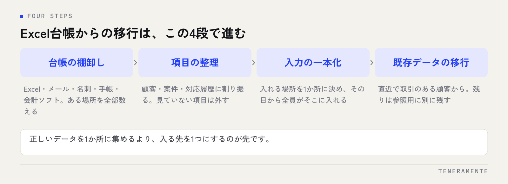

顧客管理をExcelの台帳で始めて、気づいたら同じ会社の情報が3か所にある。そんな状態からの相談が増えています。結論から申し上げると、顧客管理アプリの自社開発でいちばん効くのは、画面を作ることではなく「何を1件として数えるか」を先に決めることです。ここが決まっていない台帳は、どんな道具に移しても同じように散らばります。この記事では、Excel台帳から自社仕様の顧客管理アプリへ移る順番を、依頼する側の作業として整理します。
📌 この記事の結論
先に決めるのは道具ではなく、顧客・案件・対応履歴の3つの線引きです。この3つが分かれていない台帳は、1社に複数の行ができて数が合わなくなります。線引きを文字にしたうえで、既製のCRMで足りるのか自社仕様が必要なのかを判断すると、作る範囲が小さく収まります。
01顧客管理がExcelで回らなくなるのは、件数ではなく関わる人が増えたとき
Excelの顧客台帳が苦しくなる理由を「行数が増えたから」と説明されることがありますが、実際に先に壊れるのは人が増えたときです。1人で管理していれば、多少ばらついた書き方でも本人の頭の中で補完できます。2人目が入った時点で、その補完が効かなくなります。
典型的な症状は3つです。一つ目は、同じ会社が複数の行に存在することです。「株式会社」と「(株)」、支店名の有無、担当者ごとの表記。検索しても片方しか出てこないため、二重に連絡が行きます。
二つ目は、最新がどれか分からなくなることです。ファイルがメールで往復し、手元の控えが別に増えていく。開いた人は、その場で見えている数字を正しいものとして扱います。
三つ目は、履歴が人の手元に残ることです。いつ誰が何を話したかがメールと手帳に散っているため、担当が替わると引き継げません。顧客管理をシステム化する動機は、情報を集めることよりも、誰が開いても同じ答えが返る状態を作ることにあります。Excel管理そのものの限界の見極めはExcel管理の限界はどこ？にも整理しています。
02まず決めるのは「何を1件とするか」：顧客・案件・対応履歴の分け方
顧客管理の設計で最初にやる作業は、台帳の中身を3つの層に分けることです。ここを分けずに1枚のシートで持っているのが、ほとんどのExcel台帳の形です。
顧客は、取引の相手そのものです。会社名、所在地、業種、取引の区分。原則として1社に1件で、簡単には増えません。
案件は、その顧客との個別の取り引きです。見積もり、受注、契約、継続の更新。同じ顧客に複数あり、それぞれに金額と期日と担当者が付きます。
対応履歴は、いつ誰が何をしたかの記録です。電話、訪問、メール、見積もりの送付。顧客にも案件にもひも付き、数はいちばん多くなります。
この3つを分けると、Excelで起きていた混乱の正体が見えます。1社に複数の行があったのは、顧客と案件を同じシートで持っていたからです。履歴が消えたのは、備考欄が上書きされていたからです。3つの層に分けてから項目を並べ直すと、作るべき画面の数も自然に決まります。
03自社仕様にする価値があるのは、業務の言葉が入る部分
顧客管理の機能のうち、会社ごとに違うのは一部です。名前と連絡先を登録する、検索する、一覧で見る。この部分はどの道具でも似ています。差が出るのは、自社の業務の言葉が入るところです。
たとえば、取引の状態をどう呼ぶか。「見込み・商談中・受注・保留」なのか、「問い合わせ・提案・審査・契約」なのか。並び順も、間に入る段も業種で変わります。既製のサービスで用意された段に自社の仕事を当てはめると、現場が別の意味で使い始めて、集計が合わなくなります。
もう一つは、顧客に付ける自社固有の属性です。取引の経路、紹介元、対応できる地域、担当の割り振りの条件。この項目で検索と絞り込みができるかどうかが、使えるかどうかを決めます。
さらに、入力の手順そのものも業務ごとに違います。先に案件を立てるのか、問い合わせを受けた時点で顧客を作るのか。現場の順番と画面の順番がずれていると、入力は後回しになります。自社仕様にする価値があるのは、この3つ、つまり状態の呼び方・自社固有の属性・入力の順番の部分です。それ以外は作り込む必要がありません。
04既製のCRMと自社開発の分かれ目
顧客管理を整えたいという相談の半分は、自社開発を使わずに済みます。判断を分ける材料を並べます。
| 見るところ | 既製のCRMが向く | 自社開発が向く |
|---|---|---|
| 業務の流れ | 一般的な営業の流れに近い | 自社固有の段や審査が間に入る |
| 項目の数 | 標準の項目でおおむね足りる | 自社固有の項目で検索・集計したい |
| 他の業務とのつながり | 顧客管理だけで完結する | 見積もり・請求・在庫などと同じ画面でつなげたい |
| 使う人 | 社内の限られた人数が使う | 現場や外部の担当者も入力する |
| 画面の形 | 用意された画面でよい | 入力の順番を自社の手順に合わせたい |
| 増やし方 | 標準機能の範囲で足りる | 使いながら項目と画面を足していく前提 |
| 費用のかかり方 | 使う人数と期間に応じて続く | 作るときにかかり、その後は保守 |
判断の分かれ目は、顧客管理を単体で使うのか、他の業務と地続きにしたいのかにあります。顧客の一覧から見積もりを作り、請求の状態まで同じ画面で追いたい場合、既製のサービスをつなぐ手間が自社開発の手間を上回ることがあります。逆に、顧客と商談の記録だけなら、既製のサービスを素直に使うほうが早く始まります。内製と外注の線引きは業務アプリは内製か外注かにまとめています。
05移行の順番：棚卸し→項目の整理→入力の一本化→データの移行
Excel台帳からの移行は、順番を守るだけで失敗がかなり減ります。4つの段で進めます。

一つ目は、台帳の棚卸しです。顧客の情報が今どこにあるかを全部書き出します。Excelのファイル、メールの中、名刺、手帳、会計ソフトの取引先。この時点で「どれが正しいか」を決めなくて構いません。ある場所を全部数えるのが目的です。
二つ目は、項目の整理です。棚卸しで出た項目を、顧客・案件・対応履歴の3つに割り振ります。ここで「いちおう残している項目」が必ず出てきます。過去2年で誰も見ていない項目は、移行の対象から外します。
三つ目は、入力の一本化です。新しい情報を入れる場所を1か所に決め、その日から全員がそこに入れます。古いデータの移行を待たずに始めるのが要点で、入力先を一本化した時点から、情報が散らばるのが止まります。
四つ目が、既存データの移行です。全件を移すのではなく、直近で取引のある顧客から移します。残りは参照用に別に残し、必要になったときに移せば足ります。
06入力が続く形にするための設計
顧客管理アプリで最も多い失敗は、作った機能が使われないことではなく、入力が続かないことです。続く形にするために、設計の段階で決めておく点があります。
必須項目を最小にすることが先に来ます。登録の時点で埋まらない項目を必須にすると、現場は登録自体をやめます。会社名と担当者名だけで登録でき、あとから足せる形が現実的です。
次に、入力の回数を増やさないことです。同じ内容を顧客側と案件側の両方に書かせる設計は、必ず片方が空になります。1か所に入れたら、見たい画面に出てくる形にします。
スマートフォンで打てるかどうかも分かれ目です。訪問の帰り道に履歴を1行残せるかどうかで、記録の量が変わります。全機能をスマートフォン対応にする必要はなく、履歴の追加と検索だけ入れば足ります。
誰が何を見られるかを先に決める
顧客情報には、見える範囲の線引きが必要です。担当外の顧客まで全員が見える形にするのか、自分の担当だけにするのか。金額や条件を見られる人を限るのか。後から変えると影響が大きいため、最初に決めて記録しておきます。
07依頼する前に用意しておくもの
開発を外部に依頼する場合、次の材料がそろっていると、見積もりの精度が上がり、やり直しが減ります。公開前のチェックリストとして使えます。
- 今使っている台帳のファイル（実データのまま。項目の実情が分かる形で）
- 顧客・案件・対応履歴の3つに分けた項目の一覧
- 取引の状態の呼び方と、その並び順
- 検索と絞り込みで使いたい条件
- 月次で見たい集計の形（何を、どの単位で数えたいか）
- 使う人の数と、権限で分けたい範囲
- スマートフォンで使いたい操作
- 他のシステムとつなぎたい箇所（会計、請求、問い合わせフォームなど）
- 既存データのうち、移行する範囲と残す範囲
- 決める人を1人。社内の確認の進め方
よくある失敗は、次の5つです。
今の台帳をそのまま画面にする。Excelの列をそのまま項目にすると、使われていない項目まで移ります。棚卸しの段で削る作業を飛ばさないでください。
全部を一度に作ろうとする。顧客・案件・履歴の3つに加えて見積もりや請求まで同時に始めると、公開が遠のきます。入力の一本化が先です。
現場に見せずに決める。入力する人が見ていない設計は、入力の順番が業務とずれます。画面の案の段階で、実際に打つ人に触ってもらってください。
必須項目を増やす。きれいなデータを求めて必須を増やすと、登録そのものが止まります。あとから足せる形にします。
移行で完璧を目指す。重複の統合に時間をかけすぎて、公開が止まることがあります。直近の取引先から移し、残りは参照用に置いてください。
08自分で進める場合と、専門家に任せる場合の分かれ目
一般論として、判断の基準は3つあります。
一つ目は、項目と業務の流れを文字にできているかどうかです。顧客・案件・履歴の線引きと、取引の状態の呼び方を自社で書き出せているなら、既製のサービスやノーコードの道具で自力で組める範囲が広がります。書き出す段で止まるなら、整理そのものを相手と一緒にやる前提で相談したほうが早く進みます。
二つ目は、使う人数と権限の複雑さです。数人が同じ範囲を見る形なら、作る側の難しさは限られます。担当ごとに見える範囲を分けたい、金額を見せる人を限りたい、外部の協力者も入力する。こうした条件が増えるほど、設計を間違えたときの影響が大きくなります。
三つ目は、他の業務とつなげる予定があるかどうかです。顧客管理だけで終わるなら、小さく自作して様子を見る判断が成り立ちます。見積もり・請求・在庫と地続きにしていく前提があるなら、最初の設計で道をふさがないほうが安く済みます。
迷うときは、1年後にこのアプリで何を見たいかを1文で書いてみてください。「担当者ごとの商談の状態が分かる」までなら、自社で始めて育てる形が向きます。「顧客から請求まで同じ画面でつながっている」まで書けるなら、最初から設計を相談する価値があります。
09よくある質問
Excelの台帳をそのまま取り込めますか？
既製のCRMを一度試してから、自社開発に移ることはできますか？
開発を頼むときは、最初から全機能を決めないといけませんか？
作ったあとの保守は何が必要になりますか？
顧客情報を外部のシステムに置くのは不安があります。
10まとめ：線引きを決めてから道具を選ぶ
顧客管理アプリの自社開発は、順番が決まっています。台帳の中身を顧客・案件・対応履歴の3つに分ける。自社の業務の言葉が入る部分（状態の呼び方・固有の属性・入力の順番）だけを自社仕様にする。既製のCRMで足りるかを、他の業務とつなげるかどうかで判断する。棚卸し→項目の整理→入力の一本化→データの移行の順で進める。必須項目を最小にし、スマートフォンで履歴が打てる形にする。ここまでやれば、作る範囲は想像より小さく収まります。
逆に、今のExcelの列をそのまま画面にすると、入力の手間が増えただけの台帳ができます。顧客管理は機能の多さではなく、誰が開いても同じ答えが返るかどうかで価値が決まります。業務アプリ全体の進め方は業務アプリ開発 完全ガイドにまとめています。
TENERAMENTEなら、この記事で挙げた「項目の整理で止まる」「作ったのに入力が続かない」の2つを、進め方の側で外します。開発は3回のミーティングで要件を固める形を取っており、1回目に今お使いの台帳を一緒に見ながら顧客・案件・対応履歴の線引きと削る項目を決め、2回目に入力の順番と画面の案を実際に打つ方に触っていただきます。最短2週間でのPoC（Proof of Concept、試作による検証）に対応しているため、入力を一本化するところまでを先に動かして、集計や連携は使いながら足していけます。情報を探す時間と、同じ内容を二度打つ手間がそのまま減ります。開発の範囲と進め方はAI業務アプリ開発にまとめています。初回のご相談60分は無料ですので、台帳の整理から迷っている段階でもお問い合わせからお気軽にご相談ください。